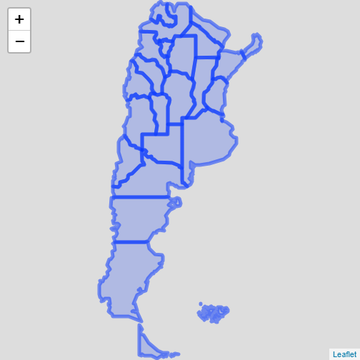
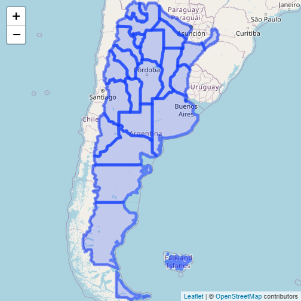
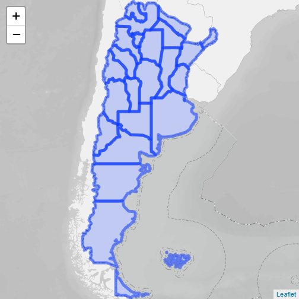

library(geoAr) # Argentina's Spatial Data Toolbox, [github::PoliticaArgentina/geoAr] v0.0.1.2
library(leaflet) # Create Interactive Web Maps with the JavaScript 'Leaflet' Library, CRAN v2.0.4.1geoAr facilita la descarga de polígonos para distintos
niveles de agregación o división política de Argentina. Por ejemplo se
puede descargar un mapa de todo el país al nivel de radios censales,
departamentos o provincial. En el siguiente ejemplo se descargar un mapa
nacional al nivel provincial y se utiliza sintaxis de
leaflet para R para generar una visualización
rápida interactiva.
argentina <- get_geo(geo = "ARGENTINA", level = "provincia")
leaflet(argentina) %>%
addPolygons()
#> PhantomJS not found. You can install it with webshot::install_phantomjs(). If it is installed, please make sure the phantomjs executable can be found via the PATH variable.
leaflet permite con una simple liena agregarle una capa
base de una veriedad de proveedores distintos que permiten mayor
contexto geográfico a la capa que se está representando. En el ejemplo
siguiente se utiliza una capa de Open Street Map.
leaflet(argentina) %>%
addPolygons() %>%
addProviderTiles(provider = providers$OpenStreetMap){goAr} también
incluye una función relativa a este punto. La misma se basa en la
función anterior para permitir el agregado de una capa base desarrollada
por el Instituto
Geográfico Nacional.
leaflet(argentina) %>%
addPolygons() %>%
geoAr::addArgTiles()